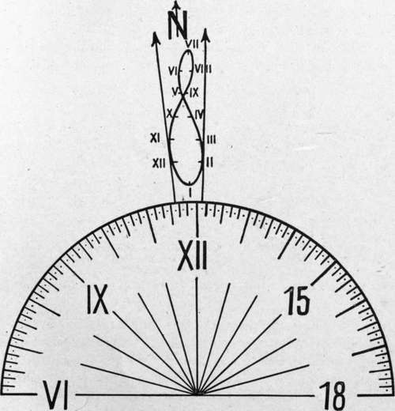
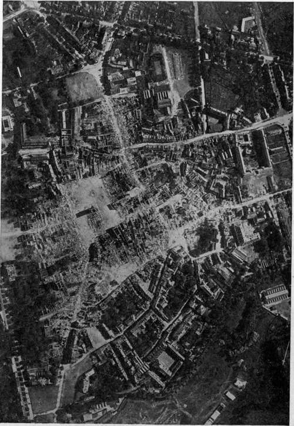
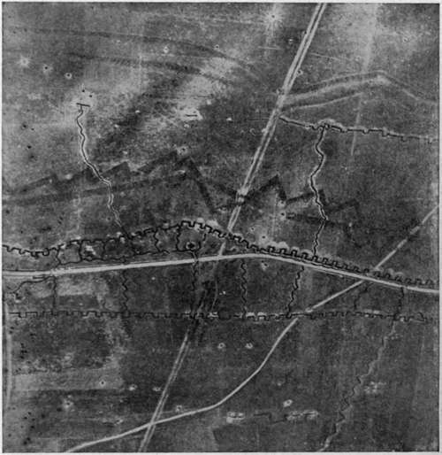
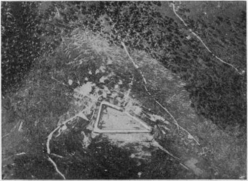
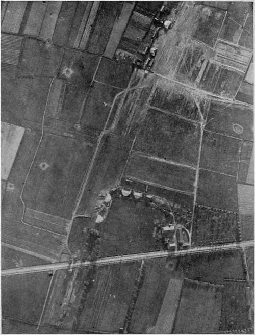
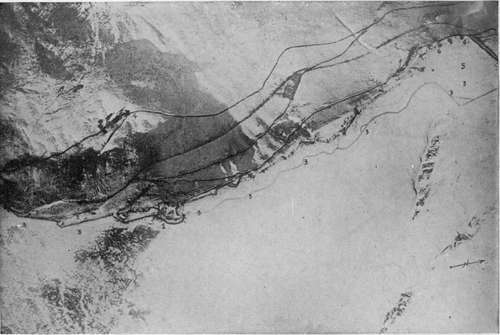
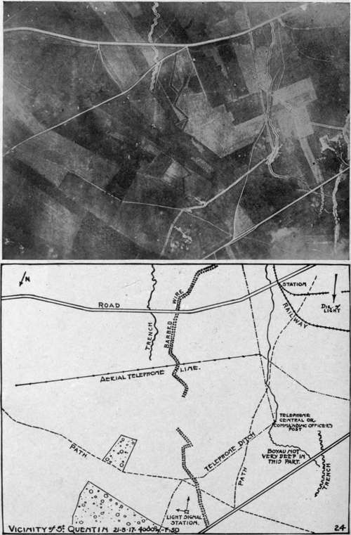

The Interpretation Of Aerial Photographs. Continued
Description
This section is from the book "Airplane Photography", by Herbert E. Ives. Also available from Amazon: Airplane photography.
The Interpretation Of Aerial Photographs. Continued
Minute changes, both in light and shade and in position, must be watched for with great care. Naturally growing foliage and the cut branches used for camouflage differ in color progressively with the drying up of the leaves. Hence a mere spot of lighter tone in a picture of a forest, especially if the picture is taken through a deep filter, becomes instant object for suspicion. The complete study of any position calls for photographs of all kinds—verticals, obliques, and stereos. Stereoscopic views are the worst foe to camouflage. A bridge painted to look like the river beneath is labor thrown away if the stereo shows it to be a good ten feet above the real river!
Fig. 166. - Location of true north from direction of shadows. Place the dial on the photograph, the hour line corresponding to the time it was taken being pointed in the direction of the shadows. North lies between the two arrows, the exact direction being obtained by joining the center of the dial to the point on the figure of eight corresponding to the date on which the picture was taken. (Numbers on figure of eight represent the 1st of the month).
A few illustrations of the more ordinary and obvious objects whose detection is the subject of aerial photography are shown in accompanying figures. Fig. 169 pictures a typical trench system, with barbed wire. The trenches show as narrow castellated lines, from which run the zigzag lines of communicatingfl;renches, saps, and listening posts. The minute pockmarks behind the main trench lines are shell holes and machine gun pits. The barbed wire shows as double and triple gray bands, intricately criss-crossed at strategic points. Another form of defence, intended for the same purpose as the barbed wire of the western front, is that furnished by overthrown trees in forest regions. Fig. 170 reveals a mountain fortress surrounded by a zone of felled structures are revealed as concrete buildings which have survived unscathed the shell fire which has obliterated, and caused to be rebuilt, nearly every other element of the trench system.
Fig. 168. - Bethune, August, 1918, illustrative of interpretation by shadows.
Fig. 169. - Typical trench photograph showing first and second lines, communicating trenches, listening posts, machine gun emplacements, and barbed wire.
Fig. 170. - A mountain fort surrounded by felled timber.
Isolated battery emplacements (Fig. 171) must be carefully studied to learn if they are in use. The chief indication is given by the paths the men make in going and coming; these show as fine light lines, obliterated by growing vegetrees, and indicates in striking manner the value of the information a single aerial photograph may furnish to an attacking force. Fig. 123 shows on a comparatively large scale opposing trench systems in which a natural obstacle—a river—separates the adversaries. Nicks and dots indicate machine guns to the skilled eye, and several rectangular tation if long disused. Another indication is the blast marks in front of the gun muzzles; occasionally the sensitive plate will catch the actual puff of smoke as the gun is discharged.
Railways of various gauges show as thin lines, crossed by ties, and exhibiting the characteristic curves and switches. They are particularly important to detect because they naturally lead to guns or supplies of importance. Abandoned railways from which the rails and ties have been removed leave their marks on the ground and must be carefully distinguished from lines in actual operation.
Aviation fields are easily recognized by the hangars, often with "funk hole" trenches alongside for the men to take shelter in during air raids (Fig. 172). Other characteristic features are the which shows the direction of the wind to the returning pilot, and of course the planes themselves, standing on the ground. But the field may be inactive, and the planes merely canvas dummies, so that to pierce the disguise, all paths, ruts, and other indications of activity must be minutely studied.
Overhead telegraph and telephone lines are revealed when new by a series of light points (Fig. 174), where the posts have been erected in the fresh turned earth. Later, when the fields through which they pass are cultivated, the post bases show as islands left unturned by the plow. In winter the wires reveal their position by black lines in the snow caused by drippings. Buried cables are indicated while building by their trenches, and for some time afterward by the comparatively straight line of disturbed earth.
Just as the detective of classic story makes full use of freshly fallen snow to identify the footprints of the criminal, so does the aerial photographer utilize a snowfall to pierce the enemy's attempts at deception. Tracks in the snow show which trenches or batteries are in actual use. Melting of the snow in certain places may mean fires in dugouts beneath. Black smudges in front of trench walls show where guns are active. Guns, wire and other objects, however carefully painted to match the gray-green earth, stand out in violent contrast to this new white background (Fig. 173).
Fig. 172. - Aviation field, showing hangars, planes, landing "T" and refuge trench.
Fig. 173. - Trenches and barbed wire in the snow of an Alpine ridge.
Italian Air Service photograph.
Fig. 174. - A fully interpreted aerial photograph.
After the aerial photograph has been interpreted the results of the interpretation must be made available to the artilleryman or the attacking infantryman. This may be done by legends marked directly on the photograph. Another method is to mount over the photograph a thin tissue paper or oilskin leaf, with the interpretation marked on it. A yet more elegant method consists in outlining all the chief features of the photograph in ink, writing in the points of importance in interpretation, and then bleaching out the photograph with potassium permanganate solution. Photographic copies of the resultant line drawing are then mounted side by side with the original photograph. Fig. 174, which shows a fully interpreted photograph, is an example of this kind of mounting.
Continue to:
- prev: Chapter XXIX. The Interpretation Of Aerial Photographs
- Table of Contents
- next: Chapter XXX. Naval Aerial Photography
Tags
camera, lens, airplane, aerial, film, exposure, photography, maps, birdseye